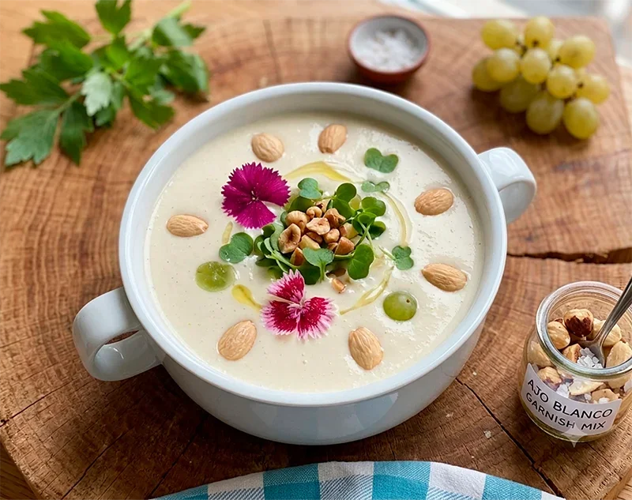

Receta saludable
Ajoblanco cremoso sin pan
Una crema fría de almendras y anacardos, suave y muy refrescante, servida con fruta fresca, aguacate y almendras tostadas para un plato diferente y lleno de matices.
Ingredientes
- 2 patatas medianas cocidas
- 1 tomate
- 1 cebolleta dulce
- 150 g de almendras
- 50 g de anacardos
- 400 ml de agua muy fría o hielos
- 1 diente de ajo
- 2 cucharadas de vinagre
- 80 ml de aceite de oliva virgen extra
- Sal
- 1/2 aguacate para servir opcional
- 1 paraguayo para servir opcional
- 1/2 mango para servir opcional
- Almendras tostadas para terminar opcional
Preparación
- Deja en remojo las almendras y los anacardos la noche anterior o durante varias horas.
- Escúrrelos y colócalos en el vaso de la batidora junto con el agua fría o los hielos, el ajo, el vinagre, el aceite de oliva y una pizca de sal.
- Tritura durante varios minutos hasta obtener una crema fina, suave y bien emulsionada.
- Prueba y ajusta de sal o vinagre si hace falta.
- Sirve bien frío en un bol o plato hondo.
- Añade por encima aguacate, paraguayo, mango y unas almendras tostadas para aportar contraste y textura.
Consejo práctico
Si quieres una textura todavía más fina, cuela el ajoblanco después de triturarlo. Y si lo sirves muy frío, los sabores quedan más redondos.